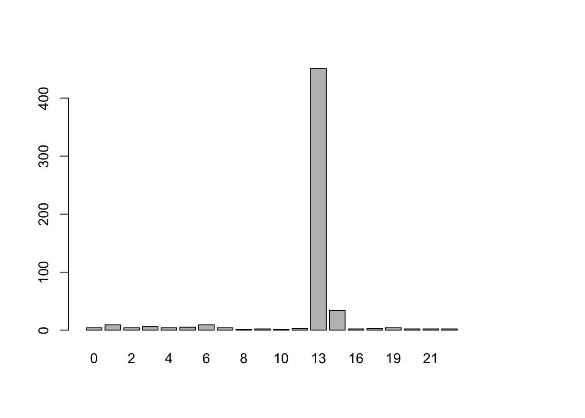

library(dplyr)
library(tidyr)
library(formatR)Over the past few days, I have been looking for fun projects to do with R and inevitably I came across Tidy Tuesday. Naturally I decided to try on this week’s dataset and so here I go with the numbats. The image is courtesy of Wikipedia.
# Get the Data
# Read in with tidytuesdayR package
# Install from CRAN via: install.packages("tidytuesdayR")
# This loads the readme and all the datasets for the week of interest
# Either ISO-8601 date or year/week works!
numbats <- readr::read_csv('https://raw.githubusercontent.com/rfordatascience/tidytuesday/master/data/2023/2023-03-07/numbats.csv')colnames(numbats) [1] "decimalLatitude" "decimalLongitude" "eventDate" "scientificName"
[5] "taxonConceptID" "recordID" "dataResourceName" "year"
[9] "month" "wday" "hour" "day"
[13] "dryandra" "prcp" "tmax" "tmin" Let’s look at a few of the columns and their possible values.
lapply(numbats[c('scientificName', 'year', 'month', 'wday', 'hour', 'dryandra')] , table)$scientificName
Myrmecobius fasciatus Myrmecobius fasciatus rufus
787 18
$year
1856 1902 1906 1954 1968 1969 1985 2000 2006 2007 2008 2009 2010 2011 2013 2014
2 1 1 1 4 3 1 1 7 2 27 24 8 28 36 113
2015 2016 2017 2018 2019 2020 2021 2022 2023
5 51 56 23 26 50 59 22 1
$month
Apr Aug Dec Feb Jan Jul Jun Mar May Nov Oct Sep
1 9 165 13 39 7 7 16 12 212 48 23
$wday
Fri Mon Sat Sun Thu Tue Wed
72 108 69 69 83 67 84
$hour
0 1 2 3 4 5 6 7 8 9 10 12 13 14 16 18 19 20 21 22
4 9 4 6 4 5 9 4 1 2 1 3 451 34 2 3 4 2 2 2
$dryandra
FALSE TRUE
597 125 Let’s barplot the year and the month column.
barplot(table(numbats$year))barplot(table(numbats$month)[month.abb])Some months have higher sighting than others. This result will make sense if we learn about the animal a little more. So I am going to scrape the numbat bio page from animalia.bio.
library(rvest)numbats_bio <- read_html("https://animalia.bio/numbat")all_tags <- html_nodes(numbats_bio, xpath = "//*")all_tags %>% html_name() %>% table() %>% unlist().
a b body div footer form h1 h2
170 3 1 470 1 2 1 12
h3 head header html i img input ins
6 1 2 1 15 19 4 3
li link meta p path script section select
17 16 9 42 3 17 15 1
span style svg textarea title ul
50 1 3 1 1 2 I am assuming most of the information I am looking for are in primitive tags such as h1, h2, h3, p etc. Let’s see what information is in the h2 tags.
all_h2_tags <- all_tags[html_name(all_tags) == 'h2']all_h2_tags %>% html_text() %>% gsub("\n", "", .) [1] "Appearance"
[2] "Photos withNumbat"
[3] "Distribution"
[4] "Habits and Lifestyle"
[5] "Diet and Nutrition"
[6] "Mating Habits"
[7] "Population"
[8] "Fun Facts for Kids"
[9] "References"
[10] "Included in Lists"
[11] "Related Animals"
[12] "More Fascinating Animals to Learn About"Looks like paragraph headlines to me. So I am expecting much of the bio information in the p tag elements.
relevant_tags <- numbats_bio %>% html_nodes("h1, h2, h3, p")
tag_type <- relevant_tags %>% html_name()
selected_text <- relevant_tags %>% html_text() %>% gsub("\n", "", .)(appearance_index <- grep("Appearance", selected_text))[1] 35(photos_index <- grep("Photos withNumbat", selected_text))[1] 37Between two h2 I am expecting a p tag. Let’s actually verify that. Let’s print the tag in-between.
selected_text[36][1] "Once widely distributed and common throughout Australia, numbats are currently classified as endangered, occurring in small and scattered populations. This unusual marsupial lacks a pouch. Numbat is a diurnal animal, which plays an important role in the ecosystem of its habitat. In addition, this magnificent and charming animal serves as the emblem of Western Australia. "Once widely distributed and common throughout Australia, numbats are currently classified as endangered, occurring in small and scattered populations. This unusual marsupial lacks a pouch. Numbat is a diurnal animal, which plays an important role in the ecosystem of its habitat. In addition, this magnificent and charming animal serves as the emblem of Western Australia.
This means h2 follows a description inside a p tag. The below function will print the two in pairs. Let’s print the “Habits and Lifestyle” portion.
print_text <- function(string) {
index <- grep(string, selected_text)
header_text <- selected_text[index]
index <- index + 1
while(tag_type[index] != "p") { index <- index + 1}
p_text <- selected_text[index]
return(paste(header_text, p_text, sep="\n"))
}(h_and_l <- print_text("Habits and Lifestyle"))[1] "Habits and Lifestyle\nNumbats are generally solitary animals, socializing only when raising their offspring and during the mating seaosn, when a breeding pair lives in a nest. The main source of their food - termites - are active during the daytime hours. For this reason, numbats are also diurnal in order to be able to feed upon termites in the shallow galleries. They typically spend mid-morning and late afternoon feeding and wandering. Meanwhile, in summer and spring, numbats are known to be active for longer periods of time during the day, taking only a short rest during mid-day in their shelters. During autumn and winter, their routine moves slightly: in this period, they are usually active later in the morning, returning to their shelters earlier in the afternoon and then remaining active during mid-day. This flexibility of their habits suggests that numbats try to minimize thermoregulatory costs and derive maximum benefit from the daylight, consuming as many termites as possible. "Habits and Lifestyle
Numbats are generally solitary animals, socializing only when raising their offspring and during the mating seaosn, when a breeding pair lives in a nest. The main source of their food - termites - are active during the daytime hours. For this reason, numbats are also diurnal in order to be able to feed upon termites in the shallow galleries. They typically spend mid-morning and late afternoon feeding and wandering. Meanwhile, in summer and spring, numbats are known to be active for longer periods of time during the day, taking only a short rest during mid-day in their shelters. During autumn and winter, their routine moves slightly: in this period, they are usually active later in the morning, returning to their shelters earlier in the afternoon and then remaining active during mid-day. This flexibility of their habits suggests that numbats try to minimize thermoregulatory costs and derive maximum benefit from the daylight, consuming as many termites as possible.
Now it makes sense. Their higher level of activity in summer and spring combined with the fact of their habitat being in Australia explains the spike of sighting in November and December.
Let’s print “Mating Habits”
print_text("Mating Habits")[1] "Mating Habits\nNumbats have a polygynous mating system, where one male mates with multiple females. They breed in December - January. Gestation period lasts for 14 days, yielding 4 babies, which live attached to their mother's body for the first 6 months of their lives. And when young are so heavy and large, that the female cannot walk with them on her body, she removes the babies, after which they start living in a log or burrow, where the mother regularly visits them, continuing to protect and suckle her offspring, until they are 8 - 9 months old. They spend the following 2 months exploring the environment, coming out of their nest to eat termites and experiencing their first encounters with predators. Finally, at 10 - 11 months old, young numbats are weaned from maternal milk. They leave their mother at 1 year old in order to find territories of their own, forage and breed. Sexual maturity is reached at 1 year old in females and at 2 years old - in males. "Mating Habits
Numbats have a polygynous mating system, where one male mates with multiple females. They breed in December - January. Gestation period lasts for 14 days, yielding 4 babies, which live attached to their mother’s body for the first 6 months of their lives. And when young are so heavy and large, that the female cannot walk with them on her body, she removes the babies, after which they start living in a log or burrow, where the mother regularly visits them, continuing to protect and suckle her offspring, until they are 8 - 9 months old. They spend the following 2 months exploring the environment, coming out of their nest to eat termites and experiencing their first encounters with predators. Finally, at 10 - 11 months old, young numbats are weaned from maternal milk. They leave their mother at 1 year old in order to find territories of their own, forage and breed. Sexual maturity is reached at 1 year old in females and at 2 years old - in males.
Their breeding period might explain the spike as well.
“Diet and Nutrition” and other stuffs do not seem relevant to this dataset so I won’t print them here.
One thing repeating throughout the bio is their diurnal routine. Let’s actually visualize that from the data.
barplot(table(numbats$hour)[1:24])
There are a disproportionately higher number of sightings during 12 PM-1 PM GMT period. This could have resulted from a data bias. Perhaps, most of the expeditions to sight the numbats were conducted during that interval. Or perhaps, the expedition team entered the data usually at that time. Looking at the Tidy Tuesday github page, it seems that the hour column was created from the eventDate column. Let’s look at a few values.
set.seed(42)
sample((numbats %>% filter(!is.na(eventDate)))$eventDate, 25) [1] "2000-09-27 21:00:00 UTC" "2016-11-17 13:00:00 UTC"
[3] "2019-11-04 13:00:00 UTC" "2013-11-28 13:00:00 UTC"
[5] "2019-11-08 13:00:00 UTC" "2019-11-06 13:00:00 UTC"
[7] "2018-11-11 13:00:00 UTC" "2014-01-17 13:00:00 UTC"
[9] "2016-10-18 13:00:00 UTC" "2020-11-08 13:00:00 UTC"
[11] "2017-12-06 13:00:00 UTC" "2006-06-06 14:00:00 UTC"
[13] "2014-12-20 13:00:00 UTC" "2009-03-16 13:00:00 UTC"
[15] "2019-10-05 22:03:21 UTC" "2022-02-03 03:28:00 UTC"
[17] "2017-11-17 13:00:00 UTC" "2021-10-18 13:00:00 UTC"
[19] "2009-05-10 14:00:00 UTC" "2015-05-26 14:00:00 UTC"
[21] "2008-12-12 13:00:00 UTC" "2014-12-24 13:00:00 UTC"
[23] "2017-12-11 13:00:00 UTC" "2021-11-22 13:00:00 UTC"
[25] "2014-12-09 13:00:00 UTC"A disproportionately high number of the events seem to have the time rounded up to the hour value. This could be a data entry decision in certain cases. However, it’s not all of them. The more recent ones seem to have a detailed clock log. I am interested in the cases where it’s not a rounded up time.
numbat_sighting_subset <- numbats %>% filter(!is.na(eventDate))
numbat_sighting_subset <- numbat_sighting_subset %>% filter(!(as.POSIXlt(eventDate)$min == 0))We still have 66 entries remaining.
We have one more problem. The log time is UTC but we need to consider local time to properly visualize the diurnal life of numbats. That’s why I use tz_lookup() function of the lutz library to lookup the timezone and convert UTC time to local time using with_tz function of the lubridate.
library(lutz)
library(lubridate)
library(sf)numbat_sighting_subset_sf <- st_as_sf(numbat_sighting_subset %>% filter(!is.na(decimalLongitude)),
coords=c("decimalLongitude", "decimalLatitude"), crs = 4326)numbat_sighting_subset_sf$timezone <- numbat_sighting_subset_sf %>% tz_lookup(crs=4326, method='accurate', warn=FALSE)numbat_sighting_subset_sf$updated_hour <- purrr::map2(.x= numbat_sighting_subset_sf$eventDate,
.y= numbat_sighting_subset_sf$timezone,
.f= function(x,y) {
as.POSIXlt(with_tz(time=x, tzone=y))$hour
})After the local time conversion is done, let’s visualize the sighting distribution across hours of the day.
numbat_sighting_subset <- numbat_sighting_subset_sf %>% st_drop_geometry()barplot(table(unlist(numbat_sighting_subset$updated_hour))[1:24])
Even with the limited data, we can see that there are a high number of sightings from 8PM-15PM. Our scraped numbat bio suggests a change in active period in different seasons but however with the limited data I am unable to test that out.
Let’s visualize these sightings in leaflet.
library(leaflet)
library(OpenStreetMap)numbat_sf <- st_as_sf(numbats %>% filter(!is.na(decimalLongitude)), coords=c("decimalLongitude", "decimalLatitude"), crs = 4326)
(m <- leaflet() %>%
addTiles() %>%
addProviderTiles("OpenStreetMap.HOT", group = "Humanitarian") %>%
addTiles(options = providerTileOptions(noWrap = TRUE), group = "Default") %>%
# addMarkers(lng = dhaka_long, lat = dhaka_lat, popup='Dhaka') %>%
# addRectangles(bbox_val[[1]], bbox_val[[2]], bbox_val[[3]], bbox_val[[4]]) %>%
addMarkers(data=numbat_sf, clusterOptions = markerClusterOptions()))Finally, I will couple that with the “Distribution” portion of the bio.
print_text("Distribution")[1] "Distribution\nBy the time of European settlement, this species was widely distributed throughout Australia, occurring in southern semi-arid and arid Australia as well as most of the southern half of Western Australia. Currently, numbats are represented by 2 survived populations in the south-western Australia, namely, at Perup and Dryandra. In addition, there are 6 self-sustaining re-introduced populations of this species, 4 of which are found in Western Australia, one in South Australia, and another one in New South Wales. Preferred habitat of numbats is eucalyptus forest and woodland with an abundance of wandoo or jarrah trees. Presence of hollow wandoo logs on the ground is an important life condition for these animals, since these logs provide them with reliable shelter and constant source of food (they eat termites, found on wandoo trees)."Distribution
By the time of European settlement, this species was widely distributed throughout Australia, occurring in southern semi-arid and arid Australia as well as most of the southern half of Western Australia. Currently, numbats are represented by 2 survived populations in the south-western Australia, namely, at Perup and Dryandra. In addition, there are 6 self-sustaining re-introduced populations of this species, 4 of which are found in Western Australia, one in South Australia, and another one in New South Wales. Preferred habitat of numbats is eucalyptus forest and woodland with an abundance of wandoo or jarrah trees. Presence of hollow wandoo logs on the ground is an important life condition for these animals, since these logs provide them with reliable shelter and constant source of food (they eat termites, found on wandoo trees).